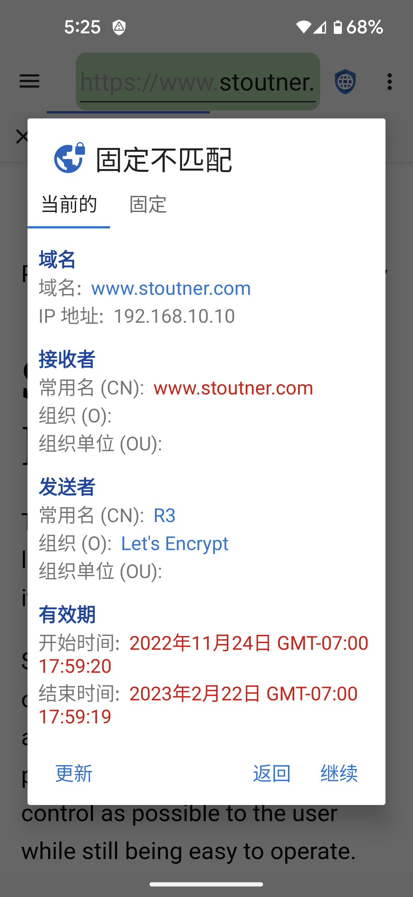
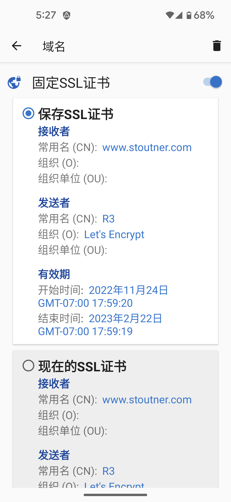

当访问一个加密的URL(由https开始)，网页使用SSL证书来加密发送到浏览器的信息和确认服务。确认服务是为了保护位于浏览器和网页提供商的的服务和翻译信息。这种攻击方式被称为MITM。 SSL证书由证书机构颁发，公司通过验证服务的身份并产生一个收费的证书。安卓有一个受信任的证书列表，会接收所有网页的证书。一个域只允许一个特定的证书，其他的证书无效。但实际使用中政府和大型公司能做到这一点。
固定的证书告诉浏览器一个域名只有一个SSL证书值得信任。其他的证书及时是合法的也会被拒绝。
SSL证书会在一个指定的日期到期，所以即使是一个固定的SSL证书也需要合法的更新。通常，在大部分使用中不需要固定的证书，但对于那些认为会被攻击的大公司来说，固定的证书可以阻止MITM攻击。隐私浏览器也提供固定IP的功能。
SSL证书可以在域名设置中固定。除了防御MITM攻击，为无线路由器或接入点等设备固定自己签名的证书通常可以消除在每次加载其网站时出现的错误消息。点击活动选项卡会显示当前网站的 SSL 证书。